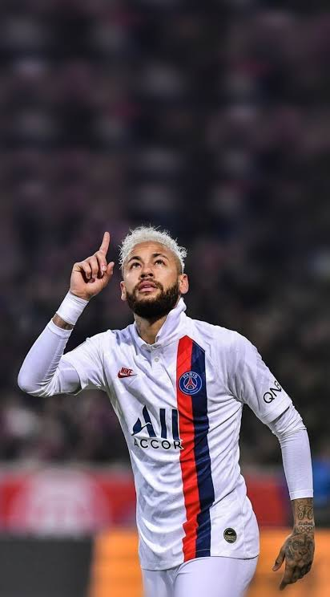

Salah satu talenta paling fenomenal dan spektakuler dalam sejarah sepak bola modern. Dikenal dengan kelincahan dribbling Samba Brasil, visi permainan kelas dunia, dan kecerdasan taktis yang memikat jutaan penggemar global.
Pewaris mahkota legenda sepak bola Brasil dengan gaya bermain Samba (*Joga Bonito*) yang otentik dan memukau.
Attacking Forward
Penyerang serba bisa yang mampu beroperasi sebagai Winger Kiri, Second Striker, maupun Playmaker nomor 10.
International Star
Ikon olahraga global dengan raihan puluhan trofi bergengsi dan jutaan pendukung loyal di seluruh belahan dunia.
BIODATA & INFORMASI RESMI
PROFIL IDOLA
PHOTO PLACEHOLDER
images/neymar-profile.jpg
Neymar da Silva Santos Júnior
"O Mágico / Menino Ney / Ney"
Nama Lengkap
Neymar da Silva Santos Júnior
Nama Populer
Neymar Jr.
Tempat Lahir
Mogi das Cruzes, Brasil
Tanggal Lahir
5 Februari 1992
Kewarganegaraan
Brasil 🇧🇷
Posisi Bermain
Attacking Forward / Playmaker
Nomor Punggung
#10 (Seleção & Club)
Kaki Dominan
Keduanya (Both-Footed)
Neymar Jr. adalah pesepak bola profesional asal Brasil yang diakui secara global atas kemampuan teknis yang luar biasa, kecepatan dribbling, kreativitas tanpa batas, serta kecerdasannya dalam mengolah bola. Mengawali kariernya di Santos FC sejak usia muda, ia berkembang menjadi salah satu penyerang paling menakutkan dan paling menghibur dalam sejarah sepak bola modern.
PERJALANAN PROFESIONAL
PENDIDIKAN & KARIER
Pendidikan Sepak Bola & Masa Awal
Neymar Jr. mengasah fondasi sepak bolanya sejak usia dini melalui kombinasi futsal dan sepak bola jalanan di São Vicente dan Santos. Bakat luar biasanya menarik perhatian klub Portuguesa Santista sebelum akhirnya bergabung dengan akademi muda Santos FC Youth Academy pada tahun 2003. Di sana, ia mendapatkan pendidikan taktis, disiplin fisik, serta pengasahan bakat teknis hingga siap melakukan debut profesionalnya.
2009 – 2013
Santos FC (Brasil)
Debut profesional pada usia 17 tahun. Menjadi fenomena sepak bola Amerika Selatan dengan mengantar Santos meraih gelar Copa Libertadores 2011 dan memenangkan FIFA Puskás Award 2011.
SANTOS FC
images/neymar-career.jpg
2013 – 2017
FC Barcelona (Spanyol)
Hijrah ke Eropa dan membentuk salah satu tridente penyerang paling mematikan sepanjang masa: MSN (Messi, Suárez, Neymar). Berhasil merengkuh Treble bersejarah (UEFA Champions League, La Liga, Copa del Rey 2014-15).
2017 – 2023
Paris Saint-Germain (Prancis)
Mentransfer ke PSG dengan rekor transfer termahal dalam sejarah sepak bola dunia (€222 Juta). Memenangkan 5 gelar Ligue 1 dan membawa klub melaju hingga Final UEFA Champions League 2020.
2023 – 2025
Al Hilal SFC (Arab Saudi)
Bergabung dengan raksasa Liga Pro Saudi dalam ekspansi pengaruh global sepak bola Asia, memberikan kontribusi pengalaman bintang dunia di kawasan Timur Tengah.
2025 – Sekarang
Santos FC (Kembali Pulang)
Kembali ke rumah tempat segalanya bermula untuk memimpin generasi talenta muda Brasil sekaligus memberikan pengabdian kembali kepada klub yang membesarkan namanya.
ATTRIBUTES & LIFESTYLE
KEAHLIAN & HOBI
Keahlian Utama Sepak Bola
Dribbling & Trickery98%
Kemampuan melepaskan diri dari lawan dalam situasi satu lawan satu dengan kecepatan dan gerakan tipu yang tidak terduga.
Ball Control (First Touch)97%
Kontrol bola yang sempurna bahkan saat menerima umpan jauh bersuhu tinggi dalam ruang gerak sempit.
Passing & Playmaking95%
Visi permainan luar biasa dalam membelah pertahanan lawan dengan melalui umpan terobosan akurat.
Finishing & Free-Kick92%
Akurasi tembakan mematikan menggunakan kedua kaki serta keahlian mengeksekusi bola mati (bola mati/free-kick).
Creativity & Vision96%
Kemampuan imajinatif menciptakan skema serangan baru yang menghibur dan efisien di area final third.
Skill Moves (Samba Flair)99%
Gaya khas Brasil seperti Rainbow Flick, Sombrero, Elastico, dan Stepover yang menjadi ciri khas penampilannya.
Hobi & Aktivitas Luar Lapangan
Sepak Bola & Futsal
Kecintaan utamanya yang selalu ia mainkan bersama teman-teman dekatnya dalam format futsal maupun pertandingan amal.
Musik Samba & Pagode
Sangat menyukai genre musik tradisional Brasil, sering bernyanyi, dan mahir memainkan instrumen musik perkusi Pagode.
Gaming & E-Sports
Gamer kompetitif yang aktif bermain game seperti CS:GO, Valorant, Fortnite, serta berpartisipasi dalam komunitas e-sports.
Fashion & Streetwear
Memiliki minat tinggi pada tren mode pakaian global, sneakers eksklusif, serta menjadi ikon tren lifestyle anak muda.
Aktivitas Sosial (Instituto Neymar)
Mendedikasikan waktu dan dana melalui yayasan non-profit untuk membantu lebih dari 3.000 anak kurang mampu di Brasil.

images/neymar-hobby.jpg
Poker Turnamen
Sering tampil dalam turnamen poker internasional sebagai sarana melatih fokus strategi mental.
HONORS & EXTRA FACTS
PRESTASI & INFORMASI TAMBAHAN
Pencapaian & Prestasi Utama
UEFA Champions League (2014-15)
Membawa FC Barcelona meraih trofi si Kuping Besar serta keluar sebagai pencetak gol terbanyak turnamen bersama Lionel Messi & Cristiano Ronaldo.
Medali Emas Olimpiade Rio 2016
Menjadi kapten dan pencetak penalti penentu yang mengantar Timnas Brasil meraih medali emas Olimpiade pertama dalam sejarah sepak bola negara tersebut.
Top Scorer Timnas Brasil (79 Gol)
Memecahkan rekor resmi FIFA sebagai pencetak gol terbanyak sepanjang masa untuk Tim Nasional Brasil, melampaui capaian sang legenda Pelé.
Copa Libertadores 2011
Memimpin Santos FC menjuarai kejuaraan teragung antarklub benua Amerika Selatan untuk pertama kalinya sejak era Pelé tahun 1963.
7x Juara Liga Domestik Eropa
Mengoleksi 2x Gelar La Liga Spanyol bersama FC Barcelona dan 5x Gelar Ligue 1 Prancis bersama Paris Saint-Germain.
FIFA Puskás Award 2011
Memenangkan penghargaan Gol Terbaik Dunia FIFA lewat aksi solo run spektakuler melewati 4 pemain Flamengo saat membela Santos.
Fakta Menarik Neymar Jr.
Memegang rekor transfer pemain termahal sepanjang sejarah sepak bola senilai €222 Juta saat dibeli PSG dari Barcelona tahun 2017.
Tridente MSN (Messi, Suárez, Neymar) mencetak rekor fantastis 122 gol dalam satu musim kompetisi (2014-15).
Mendirikan 'Instituto Projeto Neymar Jr.' di Praia Grande yang memfasilitasi pendidikan dan olahraga bagi 3.000+ anak kurang mampu.
Merupakan salah satu pesepak bola yang memenangkan gelar Copa Libertadores dan UEFA Champions League.
Karakteristik Bermain
Joga Bonito: Bermain dengan kegembiraan, improvisasi instingtif, serta tarian dribbling ala Samba.
Versatilitas Taktis: Sangat berbahaya sebagai Winger Kiri, namun efektif sebagai Playmaker No. 10 yang mengatur tempo.
Pengambil Keputusan Cepat: Memiliki kecepatan berpikir tinggi dalam situasi tertekan lawan.
Kedua Kaki Seimbang: Mampu melakukan passing, dribbling, dan shooting menggunakan kaki kanan maupun kiri secara sama baiknya.
128
Caps Timnas Brasil
79
Gol Timnas (Rekor)
30+
Trofi Utama Klub
6x
Samba Gold Award
DOKUMENTASI FOTO
GALERI FOTO NEYMAR JR.
PORTUGUESA SANTISTA
images/neymar-portuguesa.jpg
Neymar Jr. — Portuguesa Santista
Akademi Usia Dini